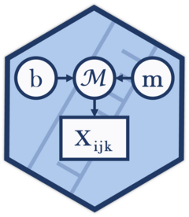

Coming from TreeBUGS or MPTinR
Gidon Frischkorn
Source:vignettes/articles/bmm_mpt_migration.Rmd
bmm_mpt_migration.Rmd1 Introduction
This article is for readers who have fitted multinomial processing tree (MPT) models with MPTinR (Singmann and Kellen 2013) or TreeBUGS (Heck et al. 2018) and want to fit them in bmm. It fits one data set that ships with TreeBUGS in all three packages and puts the estimates side by side, and it then maps the functions and arguments of the two packages onto bmm. The MPT article introduces the models in bmm from the start; this page assumes that you know MPT models and one of the two packages.
library(bmm)
reference <- readRDS(file = "fits/mpt_migration_reference.rds")
reference$versions
#> TreeBUGS MPTinR runjags rjags JAGS R
#> "1.5.3" "1.14.1" "2.2.2.5" "4.18" "4.3.2" "4.6.1"The TreeBUGS and MPTinR results on this page were computed once, with the versions printed above, and stored in reference, so the page builds without either package or JAGS. Every statement about what the two packages do was checked against the help pages and source code of these versions.
2 The example: source monitoring
TreeBUGS ships one data set, arnold2013, from a source-monitoring experiment by Arnold et al. (2013). Participants studied statements from two sources and were then tested on studied and new statements: for each one they answered “source E”, “source U” or “new”. In the TreeBUGS article, E stands for the source that the schema leads one to expect and U for the unexpected one (Heck et al. 2018). The help pages of traitMPT() and betaMPT() fit the two-high-threshold model of source monitoring (2HTSM) that comes with TreeBUGS to the 24 participants labelled encoding, and so does this page. In TreeBUGS the data are loaded as follows:
reference$freq holds the same rows:
freq <- reference$freq
head(freq)
#> subject EE EU EN UE UU UN NE NU NN
#> 1 1 3 5 8 1 8 7 4 6 22
#> 2 3 7 5 4 8 7 1 11 14 7
#> 3 5 5 6 5 0 11 5 1 7 24
#> 4 7 10 1 5 5 5 6 12 4 16
#> 5 9 10 1 5 3 7 6 6 4 22
#> 6 11 6 3 7 2 5 9 4 10 18Each row is one participant, and each column counts one combination of item type and response: EU counts the “source U” responses to items from source E, NN the “new” responses to new items.
3 The model file
The 2HTSM comes as an EQN file. Each line holds the tree (the item type), the response category, and one branch of the tree. D1, D2 and D3 are the probabilities of recognizing an item from source E, from source U or a new item as such; d1 and d2 the probabilities of remembering the source of a recognized item; a and g the probabilities of guessing source E for a recognized and for an unrecognized item; and b the probability of guessing “old” for an item that was not recognized. In TreeBUGS and MPTinR, the file and the restrictions of the help pages are checked with:
eqn_file <- system.file("MPTmodels/2htsm.eqn", package = "TreeBUGS")
restrictions <- list("D1=D2=D3", "d1=d2", "a=g")
TreeBUGS::readEQN(eqn_file, restrictions = restrictions, paramOrder = TRUE)
MPTinR::check.mpt(eqn_file, restrictions.filename = restrictions)mpt_from_eqn() reads the same file. Here it is written out, so that the article does not need TreeBUGS; the lines are those of 2htsm.eqn. Write each chain of restrictions in the reverse order of the TreeBUGS call: TreeBUGS keeps the first name of a chain, mpt_from_eqn() the last, so "D3 = D2 = D1" leaves bmm the names D1, d1, a and b that TreeBUGS uses.
eqn_file <- tempfile(fileext = ".eqn")
writeLines(c(
"# The two-high threshold model of source monitoring (2HTSM)",
"E EE D1*d1",
"E EE D1*(1-d1)*a",
"E EU D1*(1-d1)*(1-a)",
"E EE (1-D1)*b*g",
"E EU (1-D1)*b*(1-g)",
"E EN (1-D1)*(1-b)",
"U UU D2*d2",
"U UE D2*(1-d2)*a",
"U UU D2*(1-d2)*(1-a)",
"U UE (1-D2)*b*g",
"U UU (1-D2)*b*(1-g)",
"U UN (1-D2)*(1-b)",
"N NN D3",
"N NE (1-D3)*b*g",
"N NU (1-D3)*b*(1-g)",
"N NN (1-D3)*(1-b)"
), eqn_file)
responses <- c(EE = "E", UE = "E", NE = "E",
EU = "U", UU = "U", NU = "U",
EN = "N", UN = "N", NN = "N")
model_2htsm <- mpt_from_eqn(
eqn_file,
categories = responses,
tree_id = "source",
restrictions = c("D3 = D2 = D1", "d2 = d1", "g = a"),
links = "probit"
)
#> Names that differ from the EQN file (stored in attr(model, 'mpt_renaming')):
#> categories in tree E: EE -> E, EU -> U, EN -> N
#> categories in tree U: UU -> U, UE -> E, UN -> N
#> categories in tree N: NN -> N, NE -> E, NU -> U
model_2htsm#> mpt_from_eqn(file = eqn_file, restrictions = c("D3 = D2 = D1", "d2 = d1", "g = a"), categories = responses, tree_id = "source", links = "probit")
#> Response: resp_cats = E, U, N (counts per response category)
#> Parameters: D1, d1, a, b
#> Links: D1 = probit; d1 = probit; a = probit; b = probit
#> Data: response counts in one column per category ('E', 'U', 'N')
#> MPT tree 'E':
#> P(E) = (D1 * d1) + (D1 * (1 - d1) * a) + ((1 - D1) * b * a)
#> P(U) = (D1 * (1 - d1) * (1 - a)) + ((1 - D1) * b * (1 - a))
#> P(N) = (1 - D1) * (1 - b)
#> MPT tree 'U':
#> P(E) = (D1 * (1 - d1) * a) + ((1 - D1) * b * a)
#> P(U) = (D1 * d1) + (D1 * (1 - d1) * (1 - a)) + ((1 - D1) * b * (1 - a))
#> P(N) = (1 - D1) * (1 - b)
#> MPT tree 'N':
#> P(E) = (1 - D1) * b * a
#> P(U) = (1 - D1) * b * (1 - a)
#> P(N) = (D1) + ((1 - D1) * (1 - b))
#> Restrictions: D3 = D1, D2 = D1, d2 = d1, g = a
#> Identifiability (intercept-only formulas): 4 free parameter(s), 6 degrees of freedom (response categories minus 1, summed over trees)
#> Jacobian rank 4 of 4 at interior test values: locally identified.
#> Use parameter_info() for parameter descriptions, links and fixed values.Three arguments differ from the TreeBUGS call.
-
categories: the EQN file labels each response per tree (EE,UE,NEare all “source E” responses). Inbmm, all trees share the same response categories, the response options, andcategoriessays which labels of the file are the same response. The model has three trees,E,UandN, named after the item’s true source, and three response categories, alsoE,UandN, named after the response. -
tree_id: the name of the data column that says which tree a row belongs to. -
restrictions: the chains are reversed, as explained above. MPTinR keeps the last name of a chain likebmm, so"D1=D2=D3"leavesD3in both, and the reversed form makes the two fits easier to compare.
The file starts with a comment line. TreeBUGS and MPTinR skip the first line of an EQN file whatever it holds, mpt_from_eqn() skips lines that start with #, so the three packages read this file alike; ?mpt_from_eqn lists the cases in which they do not. The printed model replaces check.mpt(): it lists the parameters after the restrictions and compares their number with the degrees of freedom, as check.mpt() does, and it adds the rank of the Jacobian, which says whether the branch expressions separate the parameters. With links = "probit", all four parameters are estimated on the probit scale, as in traitMPT().
4 The data
TreeBUGS takes one row per participant with one column per category label of the EQN file. bmm takes one row per participant and tree, a column naming the tree, and one count column per response category. mpt_data_reshape() turns the first layout into the second; id names the participant column:
long <- mpt_data_reshape(freq, model_2htsm, id = "subject")
freq[1, ]
#> subject EE EU EN UE UU UN NE NU NN
#> 1 1 3 5 8 1 8 7 4 6 22
long[long$subject == 1, ]
#> subject source E U N
#> 1 1 E 3 5 8
#> 2 1 U 1 8 7
#> 3 1 N 4 6 22The first participant’s three long rows hold the nine counts of the wide row, one tree per row. Comparing one participant this way is worth doing for your own data, because a reshape that swaps two columns fits without an error. Columns of the wide data that hold no counts, such as a between-participant factor, are carried to every long row. For a model from mpt_from_string() or mpt(), which has no EQN labels, name the count columns <tree>.<category>, for example target.old.
MPTinR takes the same counts without column names, sorted by tree and then by category label. check.mpt() returns that order in eqn.order.categories; it was stored with the MPTinR fit:
reference$mptinr$order
#> [1] "EE" "EN" "EU" "NE" "NN" "NU" "UE" "UN" "UU"columns = "mptinr" reads unnamed columns in this order, which gives the same long data:
wide_mptinr <- unname(as.matrix(freq[, reference$mptinr$order]))
long_mptinr <- mpt_data_reshape(wide_mptinr, model_2htsm, columns = "mptinr")
all.equal(long_mptinr[c("source", "E", "U", "N")], long[c("source", "E", "U", "N")],
check.attributes = FALSE)
#> [1] TRUEWithout id, the rows are numbered, so the participant column holds 1 to 24 instead of the subject codes. The codes of this subset are not consecutive but the odd numbers 1 to 47, which is why the output below gives the range [1, 47] for 24 participants. bmm_data_check() runs the checks of the data that bmm() runs before a fit, without fitting:
formula_2htsm <- bmf(
D1 ~ 1 + (1 |p| subject),
d1 ~ 1 + (1 |p| subject),
a ~ 1 + (1 |p| subject),
b ~ 1 + (1 |p| subject)
)
bmm_data_check(formula_2htsm, long, model_2htsm)#> Pre-fit data check
#> Model: mpt_from_eqn(file = eqn_file, restrictions = c("D3 = D2 = D1", "d2 = d1", "g = a"), categories = responses, tree_id = "source", links = "probit")
#> Data: 72 rows, 1536 trials ('long')
#>
#> Response variables:
#> E numeric, range [0, 18] (expected: counts per response category)
#> U numeric, range [0, 14] (expected: counts per response category)
#> N numeric, range [1, 28] (expected: counts per response category)
#>
#> Data columns used by each parameter formula:
#> D1 subject
#> d1 subject
#> a subject
#> b subject
#>
#> Predictor coding:
#> subject [grouping] numeric, range [1, 47]
#>
#> Trials per design cell:
#> subject: 24 non-empty cell(s)
#> trials per cell: min 64 / median 64 / max 64
#>
#> Findings: No issues detected.
#>
#> Hard checks: passed5 Fitting the latent-trait model
The TreeBUGS fit used the settings of the TreeBUGS article (Heck et al. 2018), four chains of 50000 iterations, the first 10000 of them burn-in, every tenth draw kept, and a seed set before the call; the MPTinR fit used the defaults of fit.mpt(), which fits each participant and the summed counts by maximum likelihood:
set.seed(20261126)
fit_treebugs <- TreeBUGS::traitMPT(
eqn_file, data = freq[, -1], restrictions = restrictions,
n.chains = 4, n.iter = 50000, n.burnin = 10000, n.thin = 10
)
fit_mptinr <- MPTinR::fit.mpt(
as.matrix(freq[, reference$mptinr$order]), eqn_file,
restrictions.filename = restrictions
)In bmm, the latent-trait model is the formula above with links = "probit" in the model. Each parameter has a population intercept and a person effect per participant, and the shared label |p| puts all four person effects into one correlation matrix, as traitMPT() does:
fit_2htsm <- bmm(
formula = formula_2htsm,
data = long,
model = model_2htsm,
backend = "cmdstanr",
cores = 4,
iter = 4000,
warmup = 1000,
refresh = 0,
seed = 20261126,
file = "fits/mpt_2htsm_arnold2013"
)
summary(fit_2htsm)
#> Loading required namespace: rstan#> Model: mpt_from_eqn(file = eqn_file,
#> restrictions = c("D3 = D2 = D1", "d2 = d1", "g = a"),
#> categories = responses,
#> tree_id = "source",
#> links = "probit")
#> Links: D1 = probit; d1 = probit; a = probit; b = probit
#> Formula: D1 ~ 1 + (1 | p | subject)
#> d1 ~ 1 + (1 | p | subject)
#> a ~ 1 + (1 | p | subject)
#> b ~ 1 + (1 | p | subject)
#> Data: long (Number of observations: 72)
#> Draws: 4 chains, each with iter = 4000; warmup = 1000; thin = 1;
#> total post-warmup draws = 12000
#>
#> Multilevel Hyperparameters:
#> ~subject (Number of levels: 24)
#> Estimate Est.Error l-95% CI u-95% CI Rhat
#> sd(D1_Intercept) 0.13 0.09 0.01 0.34 1.00
#> sd(d1_Intercept) 0.32 0.30 0.01 1.09 1.00
#> sd(a_Intercept) 0.63 0.13 0.41 0.92 1.00
#> sd(b_Intercept) 0.51 0.09 0.35 0.73 1.00
#> cor(D1_Intercept,d1_Intercept) -0.01 0.38 -0.71 0.71 1.00
#> cor(D1_Intercept,a_Intercept) -0.08 0.34 -0.71 0.61 1.00
#> cor(d1_Intercept,a_Intercept) 0.00 0.36 -0.69 0.69 1.00
#> cor(D1_Intercept,b_Intercept) -0.22 0.34 -0.79 0.51 1.00
#> cor(d1_Intercept,b_Intercept) 0.07 0.37 -0.65 0.75 1.00
#> cor(a_Intercept,b_Intercept) 0.01 0.21 -0.40 0.43 1.00
#> Bulk_ESS Tail_ESS
#> sd(D1_Intercept) 4133 5596
#> sd(d1_Intercept) 8809 7273
#> sd(a_Intercept) 6818 8884
#> sd(b_Intercept) 6879 8318
#> cor(D1_Intercept,d1_Intercept) 19133 8673
#> cor(D1_Intercept,a_Intercept) 1820 2757
#> cor(d1_Intercept,a_Intercept) 1693 3724
#> cor(D1_Intercept,b_Intercept) 1626 2394
#> cor(d1_Intercept,b_Intercept) 1674 4370
#> cor(a_Intercept,b_Intercept) 7607 9313
#>
#> Regression Coefficients:
#> Estimate Est.Error l-95% CI u-95% CI Rhat Bulk_ESS Tail_ESS
#> D1_Intercept -0.70 0.08 -0.87 -0.54 1.00 14667 9127
#> d1_Intercept 0.49 0.38 -0.14 1.39 1.00 14415 7261
#> a_Intercept 0.25 0.15 -0.04 0.54 1.00 7646 8426
#> b_Intercept -0.15 0.11 -0.38 0.08 1.00 8065 8546
#>
#> Draws were sampled using sample(hmc). For each parameter, Bulk_ESS
#> and Tail_ESS are effective sample size measures, and Rhat is the potential
#> scale reduction factor on split chains (at convergence, Rhat = 1).
divergent <- function(fit) {
sampler <- brms::nuts_params(fit)
sum(sampler$Value[sampler$Parameter == "divergent__"])
}
divergent(fit_2htsm)
#> [1] 0The fit has no divergent transitions, and the largest Rhat of any parameter, person effects included, is 1.002. The TreeBUGS fit had a largest Rhat of 1.008 and at least 1161 effective draws for every parameter.
5.1 Priors
The priors are equal where the two packages allow it. TreeBUGS puts dnorm(0,1) on the probit-scale group mean of each parameter; JAGS parameterizes the normal distribution by its precision, and a precision of 1 is a standard deviation of 1, so this is the normal(0, 1) that bmm puts on each intercept under the probit link. Both imply a uniform prior on the probability of the median participant.
The priors on the person-level standard deviations and correlations cannot be made equal. TreeBUGS uses a scaled inverse Wishart distribution: the covariance matrix of the raw person effects has an inverse Wishart prior (identity scale matrix, degrees of freedom one more than the number of parameters), and each standard deviation is multiplied by a scale factor xi with a dunif(0,10) prior. brms offers the LKJ prior for correlation matrices and no inverse Wishart (?brms::set_prior). bmm puts exponential(2) on each standard deviation and lkj(2) on the correlation matrix, under which extreme correlations are less likely than under the lkj(1) that makes all correlation matrices equally likely:
priors <- as.data.frame(default_prior(formula_2htsm, data = long, model = model_2htsm))
priors[nzchar(priors$prior) & priors$coef %in% c("", "Intercept") & priors$group %in% c("", "subject"),
c("prior", "class", "coef", "group", "nlpar")]
#> prior class coef group nlpar
#> 14 exponential(2) sd D1
#> 15 normal(0, 1) b Intercept D1
#> 16 exponential(2) sd d1
#> 17 normal(0, 1) b Intercept d1
#> 18 exponential(2) sd a
#> 19 normal(0, 1) b Intercept a
#> 20 exponential(2) sd b
#> 21 normal(0, 1) b Intercept b
#> 22 lkj(2) corThe defaults depend on the link: under the default logit link, bmm puts logistic(0, 1) on each intercept and exponential(1) on each standard deviation. The two priors on a standard deviation differ a lot in scale. Quantiles of the prior on one probit-scale standard deviation, computed from 100000 draws of the TreeBUGS default and from the exponential distribution:
print(reference$prior_sigma, digits = 3)
#> package q05 q50 q95
#> 1 TreeBUGS 0.4030 4.035 18.0
#> 2 bmm 0.0256 0.347 1.5The TreeBUGS default puts half of its mass above 4.03, bmm above 0.35. Where the data say little about a standard deviation, the two posteriors differ, and the next section shows where.
6 The estimates side by side
The comparison follows one rule, fixed before the fits were read: a group-level parameter agrees when the posterior means of TreeBUGS and bmm differ by less than 0.2 times the larger of the two posterior standard deviations. The rule is applied to the four group means, the four standard deviations and the six correlations.
6.1 Group-level probabilities
getParam(fit, "mean") in TreeBUGS and native_parameters(fit, re_formula = NA, summary = TRUE) in bmm report the same quantity, the probability of the median participant: the inverse probit of the latent mean. MPTinR’s aggregated fit estimates a different quantity, the probability that fits the summed counts of all participants, with a confidence interval from the Hessian.
pars <- c("D1", "d1", "a", "b")
pairs <- t(combn(pars, 2))
tb <- rbind(reference$treebugs$group, reference$treebugs$rho)
compare_with_treebugs <- function(fit) {
means <- native_parameters(fit, re_formula = NA, summary = TRUE)
means <- means[match(pars, means$parameter), ]
sds <- brms::posterior_summary(fit, variable = paste0("sd_subject__", pars, "_Intercept"))
cors <- brms::posterior_summary(
fit,
variable = paste0("cor_subject__", pairs[, 1], "_Intercept__", pairs[, 2], "_Intercept")
)
out <- data.frame(
kind = tb$kind,
parameter = tb$par,
TreeBUGS_mean = tb$mean,
TreeBUGS_sd = tb$sd,
bmm_mean = c(means$Estimate, sds[, "Estimate"], cors[, "Estimate"]),
bmm_sd = c(means$Est.Error, sds[, "Est.Error"], cors[, "Est.Error"])
)
out$difference <- out$bmm_mean - out$TreeBUGS_mean
out$limit <- 0.2 * pmax(out$TreeBUGS_sd, out$bmm_sd)
out$agrees <- abs(out$difference) < out$limit
out
}
bmm_mean <- native_parameters(fit_2htsm, re_formula = NA, summary = TRUE)
bmm_mean <- bmm_mean[match(pars, bmm_mean$parameter), ]
comparison <- compare_with_treebugs(fit_2htsm)The group means with their 95% intervals, credible intervals for TreeBUGS and bmm, confidence intervals for MPTinR:
interval <- function(estimate, lower, upper) {
paste0(formatC(estimate, format = "f", digits = 3), " [",
formatC(lower, format = "f", digits = 3), ", ",
formatC(upper, format = "f", digits = 3), "]")
}
tb_mean <- reference$treebugs$group[reference$treebugs$group$kind == "mean", ]
mptinr <- reference$mptinr$group
knitr::kable(data.frame(
parameter = pars,
TreeBUGS = interval(tb_mean$mean, tb_mean$lower, tb_mean$upper),
bmm = interval(bmm_mean$Estimate, bmm_mean$Q2.5, bmm_mean$Q97.5),
MPTinR_aggregated = interval(mptinr$estimate, mptinr$lower, mptinr$upper)
))| parameter | TreeBUGS | bmm | MPTinR_aggregated |
|---|---|---|---|
| D1 | 0.242 [0.191, 0.293] | 0.244 [0.192, 0.295] | 0.249 [0.200, 0.297] |
| d1 | 0.706 [0.422, 0.966] | 0.677 [0.445, 0.917] | 0.692 [0.459, 0.925] |
| a | 0.599 [0.485, 0.712] | 0.597 [0.484, 0.704] | 0.596 [0.553, 0.639] |
| b | 0.439 [0.351, 0.528] | 0.440 [0.352, 0.531] | 0.447 [0.415, 0.479] |
And the rule for every group-level parameter, the standard deviations and correlations on the probit scale:
| kind | parameter | TreeBUGS_mean | TreeBUGS_sd | bmm_mean | bmm_sd | difference | limit | agrees |
|---|---|---|---|---|---|---|---|---|
| mean | D1 | 0.242 | 0.026 | 0.244 | 0.026 | 0.0018 | 0.0052 | TRUE |
| mean | d1 | 0.706 | 0.144 | 0.677 | 0.119 | -0.0293 | 0.0287 | FALSE |
| mean | a | 0.599 | 0.058 | 0.597 | 0.056 | -0.0028 | 0.0115 | TRUE |
| mean | b | 0.439 | 0.045 | 0.440 | 0.045 | 0.0006 | 0.0091 | TRUE |
| sigma | D1 | 0.147 | 0.101 | 0.133 | 0.093 | -0.0132 | 0.0202 | TRUE |
| sigma | d1 | 1.025 | 1.246 | 0.319 | 0.298 | -0.7064 | 0.2493 | FALSE |
| sigma | a | 0.663 | 0.143 | 0.629 | 0.130 | -0.0342 | 0.0286 | FALSE |
| sigma | b | 0.531 | 0.102 | 0.512 | 0.095 | -0.0189 | 0.0204 | TRUE |
| rho | D1_d1 | -0.049 | 0.405 | -0.007 | 0.378 | 0.0421 | 0.0811 | TRUE |
| rho | D1_a | -0.081 | 0.350 | -0.084 | 0.342 | -0.0025 | 0.0701 | TRUE |
| rho | D1_b | -0.230 | 0.354 | -0.224 | 0.338 | 0.0056 | 0.0707 | TRUE |
| rho | d1_a | 0.000 | 0.350 | 0.001 | 0.363 | 0.0009 | 0.0726 | TRUE |
| rho | d1_b | 0.104 | 0.383 | 0.072 | 0.372 | -0.0317 | 0.0766 | TRUE |
| rho | a_b | 0.018 | 0.227 | 0.010 | 0.214 | -0.0078 | 0.0455 | TRUE |
11 of the 14 parameters agree by the rule. Those that do not are the group mean of d1, the standard deviation of d1, the standard deviation of a; the bmm estimate is the smaller one in all of them. The standard deviation of d1 is the parameter the data say least about: its TreeBUGS posterior has a standard deviation of 1.25 and a 95% interval from 0.03 to 4.57. Source memory enters only the branches of recognized items, and with a recognition probability of 0.24 these are few of each participant’s 64 responses. Where the data say this little, the posterior follows the prior, and the TreeBUGS prior on a standard deviation is the much wider one (see Priors). The other misses lie close to the limit of the rule: the group mean of d1 differs by 0.0293 against a limit of 0.0287, the standard deviation of a differs by 0.0342 against a limit of 0.0286. How close depends on Monte Carlo error, because each posterior mean is an average over a finite number of draws. The standard error of the difference between the two means is 0.0017 for the group mean of d1 and 0.0027 for the standard deviation of a. The group mean of d1 exceeds its limit by 0.3 of such a standard error and the standard deviation of a by 2.1, so the first could agree in another run of either sampler. In the other direction, the standard deviation of b agrees with 0.8 of a standard error to spare. The standard deviation of d1 exceeds its limit by 25 standard errors, which no rerun will change.
6.2 A prior on the scale of TreeBUGS
If the priors are the reason, a bmm fit whose prior on the standard deviations has the scale of the TreeBUGS default should close the gap. An exponential prior has its median at \(\log(2)\) divided by its rate, so the rate below gives it the median of the TreeBUGS prior. The shape of the two priors still differs.
rate <- round(log(2) / reference$prior_sigma$q50[1], 3)
prior_wide <- brms::set_prior(paste0("exponential(", rate, ")"), class = "sd",
nlpar = c("D1", "d1", "a", "b"))
prior_wide
#> prior class coef group resp dpar nlpar lb ub tag source
#> exponential(0.172) sd D1 <NA> <NA> user
#> exponential(0.172) sd d1 <NA> <NA> user
#> exponential(0.172) sd a <NA> <NA> user
#> exponential(0.172) sd b <NA> <NA> user
fit_2htsm_wide <- bmm(
formula = formula_2htsm,
data = long,
model = model_2htsm,
prior = prior_wide,
backend = "cmdstanr",
cores = 4,
iter = 4000,
warmup = 1000,
refresh = 0,
seed = 20261126,
file = "fits/mpt_2htsm_arnold2013_widesd"
)
divergent(fit_2htsm_wide)
#> [1] 0
comparison_wide <- compare_with_treebugs(fit_2htsm_wide)
knitr::kable(data.frame(
kind = comparison$kind,
parameter = comparison$parameter,
TreeBUGS = comparison$TreeBUGS_mean,
bmm_default = comparison$bmm_mean,
bmm_wide = comparison_wide$bmm_mean,
agrees_default = comparison$agrees,
agrees_wide = comparison_wide$agrees
), digits = 3)| kind | parameter | TreeBUGS | bmm_default | bmm_wide | agrees_default | agrees_wide |
|---|---|---|---|---|---|---|
| mean | D1 | 0.242 | 0.244 | 0.242 | TRUE | TRUE |
| mean | d1 | 0.706 | 0.677 | 0.698 | FALSE | TRUE |
| mean | a | 0.599 | 0.597 | 0.595 | TRUE | TRUE |
| mean | b | 0.439 | 0.440 | 0.441 | TRUE | TRUE |
| sigma | D1 | 0.147 | 0.133 | 0.148 | TRUE | TRUE |
| sigma | d1 | 1.025 | 0.319 | 1.030 | FALSE | TRUE |
| sigma | a | 0.663 | 0.629 | 0.656 | FALSE | TRUE |
| sigma | b | 0.531 | 0.512 | 0.528 | TRUE | TRUE |
| rho | D1_d1 | -0.049 | -0.007 | -0.002 | TRUE | TRUE |
| rho | D1_a | -0.081 | -0.084 | -0.085 | TRUE | TRUE |
| rho | D1_b | -0.230 | -0.224 | -0.236 | TRUE | TRUE |
| rho | d1_a | 0.000 | 0.001 | 0.000 | TRUE | TRUE |
| rho | d1_b | 0.104 | 0.072 | 0.075 | TRUE | TRUE |
| rho | a_b | 0.018 | 0.010 | 0.008 | TRUE | TRUE |
With the wider prior, 14 of the 14 parameters agree with TreeBUGS by the rule. The differences in the first fit come from the priors, not from the models: both packages fit the same likelihood and the same latent-trait structure. Which prior to use is a modelling decision; the bmm default is the narrower one, and a TreeBUGS analysis moves to bmm with the same estimates only when the prior moves with it.
6.3 Participant-level probabilities
The participant estimates are getParam(fit, "theta") in TreeBUGS, native_parameters(fit, summary = TRUE) in bmm, and the individual fits of MPTinR. For the first three participants of the data:
shown <- reference$shown
bmm_theta <- native_parameters(fit_2htsm, summary = TRUE)
bmm_theta <- bmm_theta[bmm_theta$subject %in% shown, ]
tb_theta <- reference$treebugs$individual
tb_theta <- tb_theta[tb_theta$subject %in% shown, ]
ml <- reference$mptinr$individual
ml <- ml[ml$subject %in% shown, ]
key <- function(x, par) paste(x$subject, x[[par]])
rows <- key(ml, "par")
knitr::kable(data.frame(
subject = ml$subject,
parameter = ml$par,
MPTinR = interval(ml$estimate, ml$lower, ml$upper),
TreeBUGS = interval(tb_theta$mean, tb_theta$lower, tb_theta$upper)[match(rows, key(tb_theta, "par"))],
bmm = interval(bmm_theta$Estimate, bmm_theta$Q2.5, bmm_theta$Q97.5)[match(rows, key(bmm_theta, "parameter"))]
))| subject | parameter | MPTinR | TreeBUGS | bmm |
|---|---|---|---|---|
| 1 | D1 | 0.219 [-0.017, 0.455] | 0.245 [0.150, 0.347] | 0.247 [0.156, 0.343] |
| 1 | d1 | 0.547 [-0.645, 1.740] | 0.659 [0.029, 1.000] | 0.662 [0.325, 0.956] |
| 1 | a | 0.279 [0.085, 0.473] | 0.339 [0.164, 0.538] | 0.342 [0.169, 0.537] |
| 1 | b | 0.400 [0.248, 0.552] | 0.407 [0.269, 0.550] | 0.408 [0.270, 0.551] |
| 3 | D1 | 0.063 [-0.128, 0.253] | 0.200 [0.084, 0.289] | 0.204 [0.090, 0.292] |
| 3 | d1 | 0.500 [-4.799, 5.799] | 0.664 [0.001, 1.000] | 0.671 [0.263, 0.979] |
| 3 | a | 0.500 [0.362, 0.638] | 0.510 [0.371, 0.647] | 0.510 [0.372, 0.648] |
| 3 | b | 0.833 [0.719, 0.948] | 0.809 [0.690, 0.907] | 0.806 [0.686, 0.907] |
| 5 | D1 | 0.437 [0.218, 0.657] | 0.277 [0.181, 0.430] | 0.277 [0.185, 0.425] |
| 5 | d1 | 0.683 [0.122, 1.244] | 0.730 [0.266, 1.000] | 0.684 [0.365, 0.974] |
| 5 | a | 0.069 [-0.059, 0.198] | 0.190 [0.046, 0.379] | 0.195 [0.050, 0.386] |
| 5 | b | 0.444 [0.249, 0.640] | 0.442 [0.285, 0.599] | 0.439 [0.284, 0.598] |
The two hierarchical fits give nearly the same estimates of D1, a and b for each participant. For d1 they differ: the TreeBUGS intervals extend to 1 for all three participants and the bmm intervals are narrower, as the larger TreeBUGS standard deviation of d1 lets the participants spread further from the group mean. The maximum-likelihood estimates of MPTinR use one participant’s counts alone, so they lie further from the group, and their confidence intervals, computed from the Hessian (?fit.mpt), can extend below 0 or above 1. For d1, where each participant contributes few informative responses, MPTinR gives participant 3 an estimate and interval of 0.500 [-4.799, 5.799], which says nothing about the parameter; the hierarchical fits borrow strength from the other participants instead.
6.4 Goodness of fit
TreeBUGS reports the posterior predictive p-values of Klauer (2010) with PPP(): \(T_1\) for the mean frequencies of the categories, \(T_2\) for their covariances across participants. ppp() computes the same two statistics for a bmm fit (Goodness of fit in the MPT article):
set.seed(20261126)
ppp_2htsm <- ppp(fit_2htsm)
ppp_2htsm
#> Posterior predictive p-values (Klauer, 2010)
#> Cells: 'source' (3 cells)
#>
#> statistic observed replicated ppp ndraws
#> T1 6.21 5.56 0.416 12000
#> T2 24.55 25.02 0.507 12000
knitr::kable(data.frame(
statistic = c("T1", "T2"),
TreeBUGS = c(reference$treebugs$ppp$T1_ppp, reference$treebugs$ppp$T2_ppp),
bmm = ppp_2htsm$ppp
), digits = 3)| statistic | TreeBUGS | bmm |
|---|---|---|
| T1 | 0.419 | 0.416 |
| T2 | 0.533 | 0.507 |
TreeBUGS computed its PPP from 1000 posterior draws, bmm from all 12000, and both simulate the replicated data, so each PPP varies a little between runs; the seed above fixes the one printed here. Neither flags misfit. MPTinR tests the fit of the summed counts with \(G^2\): \(G^2(2) = 2.37\), \(p = 0.306\).
7 Function and argument map
The worked example covered the common steps. The table maps the other functions and arguments of MPTinR and TreeBUGS onto their bmm counterparts; links lead to the sections of the MPT article that show them.
| MPTinR / TreeBUGS | bmm |
|---|---|
| model file (EQN, MPTinR text) |
mpt_from_eqn(), mpt_from_string(), or mpt_tree() + mpt() (Importing existing model definitions) |
wide data, one row per participant and one column per EQN category (genTraitMPT()$data) |
long data, one row per participant and tree, with a tree_id column and one count column per shared response category (Data format and simulation) |
| frequencies per participant only; no item effects | one row per trial with response = (in mpt(), mpt_from_eqn() and mpt_from_string()), and item effects such as (1 | item) (Trial-level data and item effects) |
reshaping that wide data: named columns (TreeBUGS), or unnamed columns sorted by tree and label (MPTinR, check.mpt()$eqn.order.categories) |
mpt_data_reshape(wide, model), or mpt_data_reshape(wide, model, columns = "mptinr") (The data) |
restrictions = list("Dn = Do", "g = 0.5") (TreeBUGS; MPTinR takes the same list, or a file name, as restrictions.filename) |
mpt(..., restrictions = c("Dn = Do", "g = 0.5")); a fit-time constant is bmf(g = 0.5). A chain keeps its last name in bmm and MPTinR, its first in TreeBUGS (The model file). TreeBUGS’ FE has no restriction counterpart: leave the random effect out of that parameter’s formula |
check.mpt() |
print(model): parameters, trees, restrictions, the identifiability bound and a Jacobian rank check (Specifying an MPT model) |
fit.mpt(), betaMPT(), traitMPT()
|
bmm() with the random-effect structure written in the formula (see below); betaMPT() has no exact counterpart, see the list below |
traitMPT(..., predStructure = ), covData
|
predictors in the parameter formulas, e.g. D ~ 0 + cond + (1 | id)
|
transformedParameters |
brms::hypothesis(), or arithmetic on the posterior draws |
getParam(fit, "theta") |
native_parameters(fit, summary = TRUE); add pars = "D1" for one parameter (Participant-level probabilities) |
getParam(fit, "mean") of traitMPT()
|
native_parameters(fit, re_formula = NA, summary = TRUE): the probability of the median participant, as in TreeBUGS (Group-level probabilities) |
probitInverse() |
?native_parameters, section “Group-level effects” |
genTraitMPT(), genBetaMPT()
|
rmpt() inside a small simulation function (Data format and simulation) |
PPP() |
ppp(): \(T_1\) and \(T_2\) with their posterior predictive p-values, and with level = "participant" the \(T_1\) of each participant (Goodness of fit); pp_check() for the plot |
WAIC(), select.mpt()
|
loo(), waic() and bayes_factor() from brms; for aggregated counts read Model comparison before using any of them |
testHetChi(), testHetPerm()
|
these test raw frequencies before any model is fitted: run them in TreeBUGS on the wide data. In bmm, compare models with and without person effects (Model comparison) |
BayesFactorMPT() (non-hierarchical models), BayesFactorSlope()
|
brms::bayes_factor() on fits stored with save_pars = save_pars(all = TRUE) (Model comparison) |
The random-effect structure is written as a formula, not chosen from a menu. The | and || operators set which person effects are correlated, and the choice is per parameter. Of the two families of hierarchical MPT models, the latent-trait model is the last formula of the list; the beta-MPT has no exact counterpart:
-
D ~ 0 + condition + (1 | participant:condition): independent person effects per condition with one shared standard deviation. -
D ~ 0 + condition + (0 + condition || participant): one standard deviation per condition, uncorrelated across conditions. The beta-MPT of TreeBUGS also keeps person effects independent, but across parameters and with a beta distribution on the probability scale;bmmhas no exact counterpart to it. -
D ~ 0 + condition + (0 + condition | participant): one standard deviation per condition plus the full correlation matrix, that is, the latent-trait approach of Klauer (2010).
The last of these, combined with links = "probit", is the model TreeBUGS fits with traitMPT(). Correlations across parameters, the defining feature of the latent-trait model, are requested with the |p| syntax of brms, as in the worked example: D ~ 1 + (1 |p| id) and g ~ 1 + (1 |p| id) share one correlation matrix. Nothing forces D and g to share a random-effect structure, and parameters that only exist in one condition can simply take (1 | participant).
Priors need converting from precision to standard deviation. JAGS parameterizes the normal distribution by precision, Stan by standard deviation, so a JAGS dnorm(0, 0.1) on a latent-scale parameter becomes normal(0, 3.1623) in bmm (\(1/\sqrt{0.1}\)). Gamma priors carry over unchanged: JAGS dgamma(1, 0.1) on a random-effect standard deviation is gamma(1, 0.1) here, since both use the shape/rate parameterization.
TreeBUGS reports group means as probabilities. For the latent-trait model this is the probability of the median participant. To get there from a bmm fit, use native_parameters(fit, re_formula = NA, summary = TRUE), as in Group-level probabilities; it applies the inverse link to the linear predictor, which also covers the probit link and models with predictors.
What the two packages cannot fit. Both take one row of category frequencies per participant, so item effects and covariates that change from trial to trial have no place in them. In bmm, data with one row per trial take random item effects crossed with the participants, and a trial-level covariate can enter a branch expression or a parameter formula. The MPT article shows both, in Trial-level data and item effects and Design-fixed covariates in branch expressions.